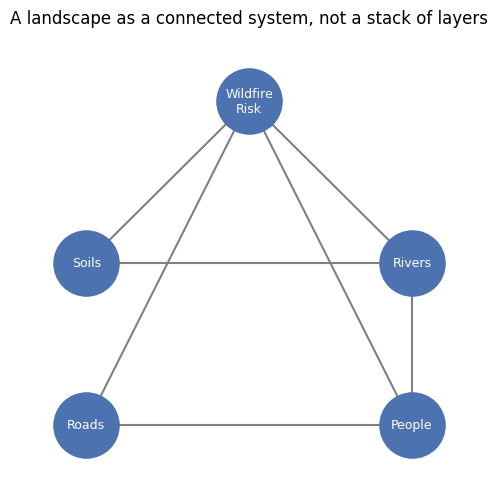

1. What is GIS?#
1.1. GISS/GEOG 361/363: Introduction to Geographic Information Science - Week 1 Lecture Notes#
Unit 1: What Is GIS? — GISystems vs. GIScience · Open source vs. proprietary software · Modern GIS architecture · The Geo-Inquiry Process
Read this before you open Practice Lab 0. It gives you the ideas behind the buttons you’ll be clicking.
1.2. Welcome to GIS#
Hi, and welcome to Introduction to Geographic Information Science.
This week, we start in a specific place: Silver City, New Mexico, and the wider Grant County / Gila National Forest region around it. We use this landscape all semester as a shared “practice place.” Everyone works with the same real place at first. That way, when we compare notes on a map or a tool, we’re all looking at the same ground.
That choice is not just convenient. It reflects something this course believes: place is not a backdrop for learning GIS — it is part of the learning. A map of an unfamiliar city teaches you buttons and menus. A map of a place with real rivers, real fire history, and real people teaches you buttons, menus, and what a map can and can’t tell you about a place. We will hold both of those at once all semester.
These notes set up the ideas behind Practice Lab 0. Read them first. The lab will make more sense, and you’ll spend your lab time exploring instead of guessing.
1.3. Learning Goals#
By the end of this lecture, you will be able to:
Explain the difference between GISystems (the software and hardware) and GIScience (the discipline of ideas underneath it) (K01, EU1)
Describe the Geo-Inquiry Process — Ask → Collect → Visualize → Create → Act — and explain why GIS courses tend to organize work this way
Name the five tiers of modern GIS practice (desktop, database, scripting, web, cloud) and place a tool you’ve heard of (or will use this week) into at least one tier
Explain, in your own words, why this course treats open-source and proprietary GIS as equally legitimate tools, and start forming your own answer to EQ1: What does this technology let us do, where are its limits, and who is excluded when using it costs money? (EQ1, A01)
Describe why this course anchors its early labs in one shared, real place — and what “critical pedagogy of place” means in practice
This lecture does not require any software. Practice Lab 0, right after this, is where you’ll open GeoLibre and your chosen track (QGIS or ArcGIS Pro).
1.4. 1. What Is GIS, Really?#
People use “GIS” to mean two different things, and mixing them up causes a lot of early confusion. This course keeps them separate on purpose.
1.4.1. GISystems: the tools#
A Geographic Information System is the software and hardware you actually click through: QGIS, ArcGIS Pro, GeoLibre, the GPS in your phone. A GISystem is a tool. Like any tool, it can be swapped out. You could lose access to QGIS tomorrow and still “do GIS” — just with a different tool in your hand.
1.4.2. GIScience: the discipline#
Geographic Information Science is the set of ideas underneath every one of those tools: how we represent a curved Earth on a flat screen, how we decide what counts as “close” to something, how error and uncertainty creep into a dataset, how a boundary line on a map can shape a real decision about real land. These ideas stay true no matter which software you’re using. Learn them once, and they travel with you to whatever tool you touch next — including tools that haven’t been invented yet.
A quick test: if a fact would still be true even if every GIS company on Earth vanished overnight, it’s GIScience. If it’s true only because of how one piece of software happens to be built, it’s GISystems.
This course teaches both, but it leans on GIScience as the more durable one. Software interfaces change every few years. The underlying ideas — projection, scale, topology, spatial relationship — change much more slowly. (K01, EU1)
1.4.3. A systems lens on “place”#
Here’s a habit of mind we’ll build all semester, starting today: a landscape is a system, not a stack.
It’s tempting to picture a place as a pile of independent layers — a roads layer, a rivers layer, a soils layer, a wildfire-risk layer — like transparent sheets stacked on an overhead projector. That mental model is useful for drawing a map. It’s a poor model for understanding a place.
In a real landscape, those “layers” are not independent. Change the wildfire-risk layer (say, a large burn) and you also change: the soil (erosion), the rivers (sediment and flow), the roads (some become unsafe or unusable), and the people (evacuation, economic effects, decisions about where to rebuild). Pull one thread, and the whole web moves a little. That’s what it means to think about a place with complexity and systems thinking: watching for feedback, interdependence, and scale, instead of treating each layer as if it lives in its own world.
We’ll return to this idea with real Gila-region wildfire data later in the semester. For now, just notice the habit: when you look at a map, ask not only what is here, but what is this connected to, and what happens if it changes.
1.5. 2. The Geo-Inquiry Process: How This Course Is Organized#
Every lab this semester — including Lab 0, right after this lecture — follows the same five-step structure, borrowed from National Geographic Education’s Geo-Inquiry Process:
Step |
What it means |
What it looks like in Lab 0 |
|---|---|---|
Ask |
Start with a real question, not a random click |
Reflect on what “GIS” already means to you, and who gets to use it |
Collect |
Gather data, or get oriented in a tool |
Open GeoLibre, find Silver City, load one data layer |
Visualize |
Look at what you collected and notice patterns |
Add a curated layer in your track (QGIS or ArcGIS Pro) |
Create |
Make something — however small |
Place and label one point on the map |
Act |
Share what you made, and reflect on what it means |
Post your screenshots and a short reflection |
We use this same five-step shape whether the task is “open some software for the first time” (today) or “analyze wildfire severity across the Gila region” (Week 10). Getting comfortable with the shape now, while the stakes are low, means you won’t be learning a new process and a new tool at the same time later in the semester, when both will matter more.
1.6. 3. Modern GIS Architecture: Five Tiers#
“GIS” used to mean one thing: desktop software. It doesn’t anymore. Modern GIS practice is spread across five overlapping tiers, and a working GIS professional (or student!) moves between them depending on the task:
Tier |
What happens here |
Example tools |
|---|---|---|
Desktop |
Point-and-click mapping, editing, and analysis on your own computer |
QGIS, ArcGIS Pro |
Database |
Storing and querying large spatial datasets with structured queries |
PostGIS, Spatial SQL |
Scripting |
Automating a workflow so it can run the same way twice |
Python, GDAL/OGR |
Web |
Making a map or app that anyone can open in a browser, no install required |
GeoLibre, ArcGIS Online, StoryMaps |
Cloud |
Streaming and processing huge datasets without downloading them first |
Cloud-native formats (like the |
You’ll touch all five tiers before the semester ends — a little database work in Week 8, a little scripting throughout, and cloud-native data starting today, in Lab 0, when you stream a countries layer straight into GeoLibre without downloading anything first.
The practical takeaway for this week: QGIS and ArcGIS Pro live in the same tier (Desktop). They are two different tools doing a similar job, which is exactly why this course treats them as parallel, equally valid choices rather than a “real” option and a backup.
1.7. 4. Open Source vs. Proprietary: A Question of Access#
This brings us to one of the course’s essential questions, which will follow you all semester:
EQ1 — What does this technology let us do, where are its limits, and who is excluded when using it costs money?
Here are the two tools you’ll compare in Lab 0:
QGIS is open source: the code is free, public, and built collaboratively by a global community. Anyone with a computer can install it and use every feature, forever, at no cost.
ArcGIS Pro is proprietary: it’s built and owned by a company (Esri), licensed to WNMU, and made available to you because the university pays for that access.
Neither is “the real GIS,” and neither is a downgrade of the other. Both produce professional, industry-used results. The difference that matters most for EQ1 is who gets to walk through the door. A student, a small nonprofit, or a community group anywhere in the world can open QGIS tomorrow with no budget at all. The same is not true of a several-thousand-dollar-a-year enterprise license.
This is not just a technical detail — it’s part of the course’s GeoEthics strand, alongside critical cartography and data sovereignty. Later in the semester, we’ll ask who gets to make maps, whose knowledge of a place counts as “data,” and who is left out of the conversation entirely. Today’s version of that question is smaller but points the same direction: if a tool costs money, who doesn’t get to use it?
You don’t need a final answer this week. Lab 0 asks you to write down a first-pass answer, and you’ll revisit it after you’ve actually used one (or both) tools with your own hands. (EQ1, A01)
1.8. 5. A First Look: GeoLibre#
Before Lab 0 asks you to do anything with GeoLibre, it can help to simply see it. GeoLibre is a free, browser-based GIS viewer — nothing to install, no account needed. It’s today’s example of the Web tier from Section 3.
The optional code cell below embeds the live GeoLibre app right in this notebook, the same way Lab 0 does. You don’t need to do anything with it here — just take a look, get oriented to the layout, and save your real exploring for the lab.
# OPTIONAL -- preview the GeoLibre web app right inside this notebook.
# Nothing to configure here. If it doesn't load, that's normal in some hosted
# notebook environments (Colab, some JupyterHubs block embedded pages) --
# just open https://web.geolibre.app/ directly in a browser tab instead.
from IPython.display import IFrame
IFrame(src="https://web.geolibre.app/", width="100%", height=500)
If the embedded map above doesn’t load, open https://web.geolibre.app/ in a normal browser tab — that always works. In Lab 0, you’ll do your real work there rather than inside this notebook.
1.9. 6. Grounding This Course in Place: Silver City and the Gila Region#
We could have taught this unit with a generic, made-up town. We didn’t, and that choice is deliberate.
Critical pedagogy of place asks us to treat the local landscape as more than scenery for an assignment. It asks: whose histories are layered into this ground, what has changed here and why, and what does it mean to represent this specific place on a map, well or poorly? Southwestern New Mexico is not an empty backdrop. It carries deep Mogollon and Mimbres history, visible today at sites like the Gila Cliff Dwellings, and later Chiricahua Apache homeland and history as well. A first-time visitor’s map of this region, made without that context, can easily get real things wrong or leave them out entirely — which is exactly the question Lab 0 asks you to sit with in its Ask step.
This is also where culturally sustaining pedagogy comes in: learning GIS here isn’t only about learning to read this region’s story well. It’s about building the habit of asking that same question about any place — including the one that matters most to you, which is exactly what your semester-long Place-Based Geospatial Inquiry Project (starting next week) will ask you to do.
For now, in Silver City and the Gila, we’re all standing on the same shared ground while we learn the tools. Starting next week, you’ll choose your own.
1.10. 7. Getting Ready for Practice Lab 0#
A few things to know before you open the lab notebook:
This lab is ungraded practice. Its job is to get you comfortable moving around GIS software before Lab 1, which is graded, and before your Place-Based Geospatial Inquiry Project, which starts next week.
Everyone starts in GeoLibre. No installs, no login.
Then you pick one track — 🗺️ Track Q (QGIS) or 💼 Track A (ArcGIS Pro) — and stay in it through the rest of the lab. If you’re not sure which to pick, Track Q works on any computer for free, which makes it a safe default.
You’ll take three screenshots along the way. Save them as you go — it’s much easier than trying to reconstruct your steps afterward.
Expect some friction, and that’s fine. GIS software has a learning curve, and figuring out where a button lives is itself part of the skill. This course treats troubleshooting as a skill you’re building on purpose, not a sign that something’s wrong.
When you’re ready, open Lab 0 and start with its Ask step — the same reflection questions this lecture just introduced you to.
1.11. Before You Move On: Quick Reflection#
Take two minutes with these — you’ll expand on them in Lab 0, so a rough first pass is all you need here.
In your own words, what’s one thing that separates GIScience from a GISystem?
Pick one of the five tiers (desktop, database, scripting, web, cloud). Where have you already encountered it, even outside of a GIS class?
What’s your gut-level answer to EQ1 right now, before you’ve used any of the tools? You’ll come back to this after Lab 0.
Your answers (double-click this cell to edit):
1.11.1. 📎 Resources#
National Geographic Education — Geo-Inquiry Process: https://www.nationalgeographic.org/education/geo-inquiry/
GeoLibre — https://geolibre.app/ (docs & tutorials) · https://web.geolibre.app/ (live app)
QGIS — https://qgis.org/
ArcGIS Pro / Online — see course LMS for WNMU access details
NM RGIS Clearinghouse (our regional data source all semester) — https://rgis.unm.edu/
D’Ignazio, C. & Klein, L. (2020). Data Feminism. MIT Press — free online at data-feminism.mit.edu (supports this course’s GeoEthics strand)
1.12. Summary#
GIS is two things at once: a set of tools (GISystems) and a discipline of ideas (GIScience) that outlasts any one tool. This course organizes its work through the Geo-Inquiry Process — Ask, Collect, Visualize, Create, Act — and treats modern GIS as spread across five tiers, from desktop software to cloud-native data. Open-source and proprietary tools are both legitimate paths through that landscape, but they aren’t equally accessible, and that gap is part of what this course asks you to think critically about. All of it starts, this week, grounded in one real place: Silver City and the Gila region — not because this place is special above all others, but because starting somewhere real, together, is how this course means to teach GIS from day one.
You’re ready for Practice Lab 0.
1.13. Appendix: Two Optional Interactive Demos#
Everything above this line is all you need for this week. The two cells below are optional extras — small, self-contained demos of ideas from this lecture, built in Python. Skip them, come back later, or run them now if you’re curious. Nothing here is graded.
# OPTIONAL -- a small, from-scratch diagram illustrating "landscape as system, not stack"
# (Section 1). No extra installs needed -- matplotlib is enough.
import matplotlib.pyplot as plt
fig, ax = plt.subplots(figsize=(6, 6))
nodes = {
"Wildfire\nRisk": (0.5, 0.85),
"Soils": (0.15, 0.5),
"Rivers": (0.85, 0.5),
"Roads": (0.15, 0.15),
"People": (0.85, 0.15),
}
edges = [
("Wildfire\nRisk", "Soils"),
("Wildfire\nRisk", "Rivers"),
("Soils", "Rivers"),
("Wildfire\nRisk", "Roads"),
("Roads", "People"),
("Rivers", "People"),
("Wildfire\nRisk", "People"),
]
for a, b in edges:
x1, y1 = nodes[a]
x2, y2 = nodes[b]
ax.plot([x1, x2], [y1, y2], color="gray", linewidth=1.5, zorder=1)
for label, (x, y) in nodes.items():
ax.scatter([x], [y], s=2200, color="#4C72B0", zorder=2)
ax.text(x, y, label, ha="center", va="center", color="white", fontsize=9, zorder=3)
ax.set_xlim(0, 1)
ax.set_ylim(0, 1)
ax.axis("off")
ax.set_title("A landscape as a connected system, not a stack of layers")
plt.show()

This is a deliberately simple sketch — five “layers” from a real Gila-region question, drawn as a connected web instead of independent stacks. Notice that Wildfire Risk touches almost everything else. In systems terms, that makes it a high-leverage node: a change there ripples outward further than a change almost anywhere else in the diagram. We’ll build a version of this with real Gila-region wildfire data later in the course.
That’s it for Week 1 lecture notes. When you’re ready, head to Practice Lab 0 and start with its Ask step.